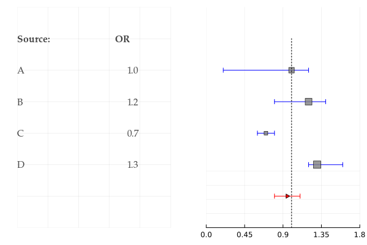
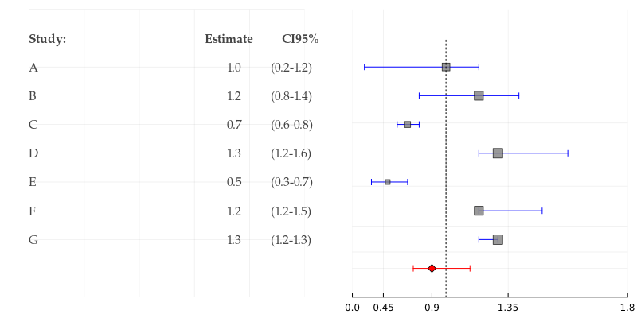
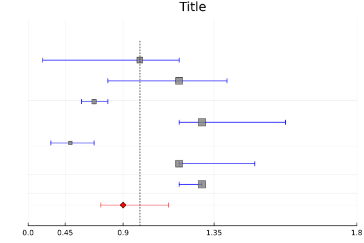
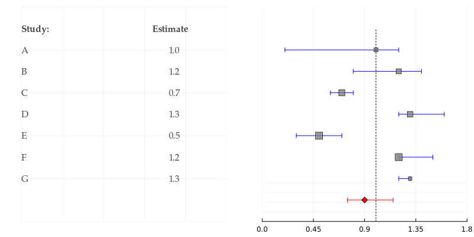

ForestPlot
Documentation for ForestPlot.
ForestPlot is a simple package to draw forest plots for mata-analysis study.
Examples
using ForestPlot, Plots
p = forestplot([[0.2,1.2], [0.8,1.4], [0.6, 0.8], [1.2, 1.6]],
metric = [1.0, 1.2, 0.7, 1.3], source = ["A", "B", "C", "D"],
summary = Dict(:ci =>[0.8, 1.1], :est => 0.95, :markershape => :rtriangle), logscale = false)
png(p, "plot1.png")
p = forestplot([[0.2,1.2], [0.8,1.4], [0.6, 0.8], [1.2, 1.6], [0.3, 0.7], [1.2, 1.5], [1.2, 1.3]],
metric = [1.0, 1.2, 0.7, 1.3, 0.5, 1.2, 1.3], source = ["A", "B", "C", "D", "E", "F", "G"],
sourcelabel = "Study:", metriclabel = "Estimate",
summary= Dict(:ci => [0.75,1.15], :est => 0.9),
logscale = true, printci = true, title = ["" "Title"], size = (800, 400))
png(p, "plot2.png")
p = forestplot([[0.2,1.2], [0.8,1.4], [0.6, 0.8], [1.2, 1.6], [0.3, 0.7], [1.2, 1.5], [1.2, 1.3]],
metric = [1.0, 1.2, 0.7, 1.3, 0.5, 1.2, 1.3],
summary= Dict(:ci => [0.75,1.15], :est => 0.9),
logscale = true, title = "Title")
png(p, "plot3.png")
p = forestplot([[0.2,1.2], [0.8,1.4], [0.6, 0.8], [1.2, 1.6], [0.3, 0.7], [1.2, 1.5], [1.2, 1.3]],
metric = [1.0, 1.2, 0.7, 1.3, 0.5, 1.2, 1.3], source = ["A", "B", "C", "D", "E", "F", "G"],
cimszwts = [1.0, 2.0, 3.0, 2.5, 4.0, 4.0, 0.5],
sourcelabel = "Study:", metriclabel = "Estimate",
summary= Dict(:ci => [0.75,1.15], :est => 0.9),
logscale = false, title = ["" "Title"], size = (800, 400))
png(p, "plot4.png")
ForestPlot.forestplot — Methodforestplot(ci; sourcelabel = "Source:", metriclabel = "OR", cilabel = "CI95%",
source = nothing, metric = nothing, printci = false,
summary = nothing, logscale = true, cimsz = -1, cimszwts = nothing, size = (600, 400), kwargs...)By default plot is logscaled.
ci- vector (iterable) of confidence intervals bounds;source- vector of study names (String);metric- vector of metric estimates;printci- print confidence interval;summary- print summary object (Dict);logscale- if true CI will be transformed (expfunction used);cimsz- CI marker size,-1or any value < 0 - auto;cimszwts- CI marker size weights (ifnothing-metricwill be used);size- size of plot.
Example
using ForestPlot
forestplot([[0.2,1.2], [0.8,1.4], [0.6, 0.8], [1.2, 1.6]],
sourcelabel = "Study:", metriclabel = "Estimate",
metric = [1.0, 1.2, 0.7, 1.3],
source = ["12345678901234567890", "B", "C", "D"])Summary object
Summary is a Dict() with keywords:
- :ci
- :est
- :vline
- :markershape
- :markersize
Example 1
forestplot([[0.2,1.2], [0.8,1.4], [0.6, 0.8], [1.2, 1.6]],
metric = [1.0, 1.2, 0.7, 1.3], source = ["A", "B", "C", "D"],
summary = Dict(:ci =>[0.8, 1.1], :est => 0.95, :markershape => :rtriangle), logscale = false)Example 2
forestplot([[0.2,1.2], [0.8,1.4], [0.6, 0.8], [1.2, 1.6], [0.3, 0.7], [1.2, 1.5], [1.2, 1.3]],
metric = [1.0, 1.2, 0.7, 1.3, 0.5, 1.2, 1.3], source = ["A", "B", "C", "D", "E", "F", "G"],
sourcelabel = "Study:", metriclabel = "Estimate",
summary= Dict(:ci => [0.75,1.15], :est => 0.9),
logscale = true, printci = true, title = ["" "Title"], size = (800, 400))